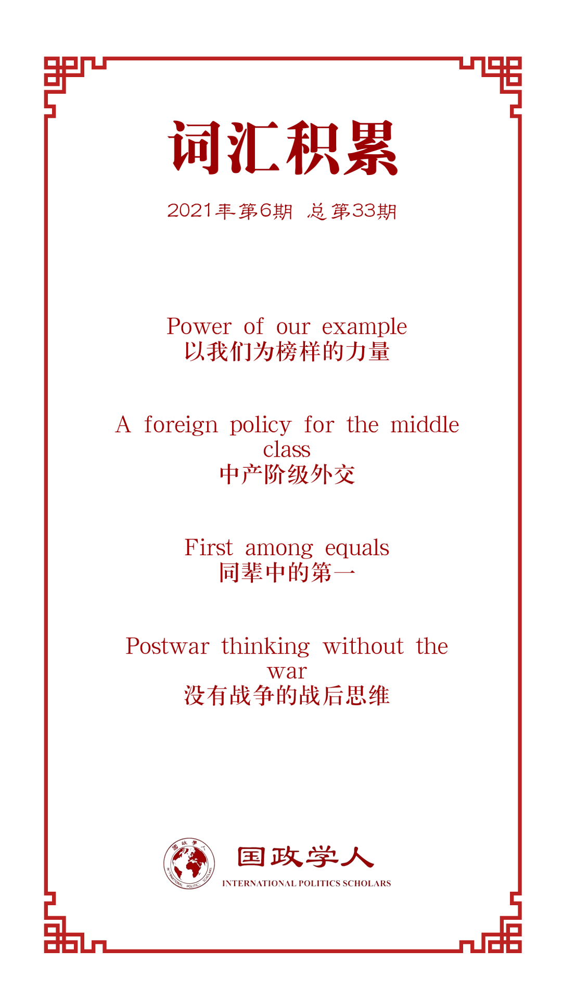

收录于合集

作品简介
【作者】 马秀丝（Jessica Tuchman Mathews）是卡内基国际和平研究院的杰出学者，曾担任该研究院的院长一职18年。她曾在行政和立法部门任职，于1993年担任副国务卿全球事务的代表。她于1997年在 Foreign Affairs 杂志上发表的“权力的变迁”（power shift）一文被认为是该杂志75年来最具影响力的文章。
【编译】 徐一凡（国政学人编译员，立命馆大学国际关系学院）
【校对】 卫艺璇
【审核】 姚寰宇
【排版】 秦子宁
【美编 】游钜家
【来源】 Mathews, Jessica T . Foreign Affairs , 100(2): 10,12-16.
【归档】 《国际关系前沿》2021年第6期，总第33期。
期刊简介
《外交事务》（ Foreign Affairs ），创刊于1922年，是美国外交关系委员会发布的国际关系和美国外交政策的美国杂志，被誉为“美国最具影响力的外交政策杂志”之一。根据2018年的期刊引文报告（Web of Science）, 该期刊的影响因子为4.390，在“国际关系”类别的91种期刊中排名第3。
见证世界重构？
美国对外政策必须重新制定，
**不能回到过去
**
Present at the Re-creation?: U.S. Foreign Policy Must Be Remade, Not Restored
马秀丝（Jessica T. Mathews）
内容提要
后特朗普时代的美国和世界已经改变的太多，原先的政策经验已经不再适用。面对一个权力分散、美国声誉受损的全球化世界，拜登将面对持谨慎甚至怀疑态度的外国伙伴——这是美国领导人不习惯的挑战。对此，华盛顿需要“没有战争的战后思维”，超越旧有桎梏，重新用务实和创新思维制定美国对外政策。
文章导读
拜登多年来一直声称美国可以很快从异类总统特朗普造成的伤害中恢复过来。但回到特朗普之前的状态已然不可能，美国和世界形势已经变得太多。为美国霸权回归喝彩对美国人来说可能是一种安慰，但其他国家却可能会对此置若罔闻。当人们回顾过去二十年美国的所作所为，他们看不到美国坚强的领导力。他们看到的是美国造成的一系列灾难，特别是2003年入侵伊拉克造成的中东局势动荡，以及2008年金融危机中美国的糟糕表现。
美国的国内表现也不尽如人意。美国对新冠疫情的应对比世界上任何主要国家都差。美国只占世界人口的4%，却贡献了25%的确诊病例和19%的死亡病例。其失败原因在各个层级都能找到：国家领导力惊人的缺失；群众离心离德，不愿为群体利益做出适度牺牲；医疗保健系统严重不公且管理混乱。
诚然，这些问题早在特朗普之前就已经存在了。奥巴马在达成巴黎气候变化协定和伊朗核协议时，就必须将条约设计成不需要国会批准也能有效，因为大家都知道近十五年来参议院都没有通过任何多边条约。但特朗普的“美国第一”民粹民族主义却把美国对外政策长久以来的基础都斩断了，包括质疑长久保持的同盟、拥抱独裁者、疏远盟友、以及退出美国自己创立的诸多国际组织和条约。
简言之，拜登称之为“以我们为榜样的力量”（the power of our example）早已今不如昔了。就民主法治而言，美国已经不是榜样，而是反面教材了。美国仍然在军事和经济上有巨大优势，但却很难将这些优势用在实处。在外交上重塑信誉的同时，美国也要在国内恢复元气，而这将是一个漫长的过程。拜登可能会严重高估美国在一些问题上作为“榜样”的力量，比如气候变化和恢复民主等。
面对一个权力分散、美国声誉受损的全球化世界，拜登将面对持谨慎甚至怀疑态度的外国伙伴——这是美国领导人不习惯的挑战。他的大部分议程都不得不通过行政命令来实行，但所有人都知道下任总统就可能使这些努力化为乌有。其他国家甚至认为拜登的当选并不意味着特朗普主义（Trumpism）会就此消失。即便是亲密盟友也不得不和美国玩危险的轮盘赌博游戏，因为美国可能会没有任何预兆地从一种对外政策转向完全相反地另一种政策。这些国家对此合理的应对只能是对冲：避免做出重大承诺，尽量保持灵活，即便对受欢迎的美国政策也要如此。在此种情形下，美国要做任何事都会难上加难。
01
重拾碎片
对外政策向来不是总统大选中的重头戏，对拜登来说更是如此。比如，拜登表示新贸易协定要等到联邦政府对基础设施建设、研究和开发等领域做出投资后再另行打算。当然，实际需要多少时间做成这些事就是另一回事了。而国际社会可不会因为美国正投入到国内建设就按下暂停键。
但可以确定的是，拜登将在两个方面对特朗普和蓬佩奥的对外政策做出重大转变。拜登了解美国的同盟和伙伴网络的内在力量，他将尽一切努力重建与他们的密切关系，特别是在欧洲。他还将扭转特朗普政府对多边主义和国际机构的轻视态度。这些举动都将受到国际社会的欢迎。具体而言，从人事任命中可以看出，气候变化问题是拜登的要项之一。但同时，核问题可能并不是拜登要在短期内重点解决的问题，因为无论是国防部长奥斯汀还是总统国家安全顾问苏利文都不是此领域的专家。拜登会尽快和俄罗斯续签《新削减战略武器条约》，也会投入大量政治资本挽救伊朗核协议。但想要扭转特朗普大力发展的核武计划，将核武器重新注重于战略威慑手段而非战术武器，改善尚处于早期的和中俄的核军备竞赛，拜登还是需要真正的核领域专家的帮助。
02
中产阶级外交？
拜登一直宣称他将施行“中产阶级外交”（a foreign policy for the middle class）。但这种东西是否存在事实上是存疑的。在高收入制造业工作流失问题上，贸易规则只占一小部分原因，而科技竞争格局的改变才是更重要的原因。拜登的“重建美好”（Build Back Better）计划提出了许多经济计划，但和对外政策其实没什么关系。越是仔细审视这些细节，中产阶级外交政策的概念就越站不住脚。
拜登政府真正的首要对外政策挑战是制定一个平衡的、非意识形态化的中国政策。在中国军事和经济力量快速崛起的背景下，美国别无他法，必须制定一个能和中国和平共处的战略。特朗普的中国政策摇摆不定。同时，民意调查也显示美国民众对中国持负面看法的比例从特朗普刚就任时的47%提升到了去年秋季的73%。就连对中国市场有所求的商界金融界都对中国转向负面。
为了避免中美关系的持续恶化，美国需要改掉妖魔化中国的恶习，抛弃将和中国的竞争比作冷战意识形态斗争的自欺欺人。美国需要识别出中国在亚洲和世界的合理利益，决定哪些是可以接受的，哪些是应该争取的，哪些是需要对抗的。这些政策应该基于和区域内的盟友和潜在伙伴的合作，对金融危机后情势变动的正确认知，还要避免强迫亚洲国家在中美两个超级大国（superpowers）间选边站。美国应该和欧洲国家一道加入亚洲的多边贸易和经济协定，而非将欧洲变成中美竞争的角斗场。最紧要的是，北京、台北和华盛顿要认识到多方苦心维持的“一个中国”政策的刻意模糊性已经被特朗普和蓬佩奥的斗鸡游戏有所破坏。如果最低限度的共识都不能维持，中美很可能走向冲突，而且有爆发核战争的可能性。
03
“没有战争的战后思维”
目前，美国两党在战后形成的对外政策共识已经破裂。冷战后，特别是90年代所谓的“单极时刻”之后，美国就何种世界秩序才符合美国利益，以及美国在其中应该扮演何种角色展开了大辩论，但至今尚无定论。
美国的对外政策专家大体可分为两派。一派人认为美国应该继续事无巨细地发挥全球影响力。另一派人则认为美国应该缩小对国家利益地定义。第一派人认为，世界需要一个领导，且除了美国别无他选。有些人进一步认为，过少行事甚至会比过多行事对美国造成更大伤害。他们常常支持美国独断的领导和武装干涉。这些人往往更多的依赖于过去的经验，而非未来的世界将会如何。而第二派人则认为，美国只需要发挥有限的作用，在一个多极世界中争做同辈中的第一就可以了（first among equals in a multilateral community）。
最近，一些第一派中人开始质疑，在一个民粹主义和威权统治激增的世界中，当前秩序是否合适。他们主张建立一种由民主国家组成的联盟来反对威权政府的秩序。拜登有时会令人不安地暗示他同意这一观点。如果真的出现这样一种秩序，那国际社会就更不可能成功处理具有更大风险的全球挑战了，包括核扩散、腐败、网络战、疫情和气候变化。
第二派人认为，过去二十年的经验已经证明，美国好像已经习惯了把手伸的太长，而后果则是经常挑起对国家利益无关紧要的战争和军事干涉。一些认同这一观点的人主张，美国应该大幅收缩，将美国的核心利益定义为和中国、俄罗斯和欧洲的关系。推进民主、促进人权、援助贫穷国家以及其他消耗了美国外交资源的目标都被排除在外。另一些人则主张更温和的调整，主要集中在从麻烦不断的中东撤出。
这场辩论不太可能在未来四年内得出结果。与普通总统不同，拜登在任期间的对外政策将致力于消除其前任犯下的堆积如山的错误，不仅耗费时间和外交努力，还将耗费政治资本。拜登能取得什么成果，在很大程度上取决于特朗普在参议院的继任者是否将回归将“美国第一”作为其主要公开立场。尽管专家们对外交政策的各种观点与两党之间的差异并不完全一致，但美国的两极分化程度之深，以及国会两党的势均力敌都意味着，几乎每一个政策转变都将是一场政治斗争。同时，舆论也存在分歧。2016年，皮尤研究中心（Pew Research Center）做出的一项调查显示，41%的美国民众认为美国在全球事务上“做的太多”，27%认为“太少”，还有28%认为“刚刚好”。最后，在没有重大剧变的情况下，新思维总是很难产生的。几十年前，美国外交官Harlan Cleveland就喜欢说，华盛顿需要的是“没有战争的战后思维”（postwar thinking without the war）。当下也是如此，但在目前的环境下出现这种新思维却不太可能。
如果拜登政府继续像早期迹象显示的那样行事，其将完全落入两派对外政策观点中的第一派。如果拜登的政策受阻，那将是因为他太过依赖过去的经验，尝试做超出今不如昔的美国的能力和声望的事。拜登政府会尽其所能在关键问题上有所进展，但在推进民主的问题上可能会力不从心。但如果拜登能够和中国建立战略上可靠的关系，重构与俄罗斯的关系，采取将国际经济增长视为多赢局面而非零和博弈的经济政策，重新取得盟友和伙伴的信任，他的政府还是能够有所作为的，即便可能无法留下新的对外政策共识。
译者评述
我们正在经历国际关系中的百年未有之大变局。日本学者中山俊宏将2001年9·11恐袭、2008年金融危机和2020年新冠疫情危机称为冷战后的三次重大危机。其中，尤以我们正在经历的新冠疫情危机为甚，因为此次危机几乎覆盖国际关系的全方面：经济、安全、政治制度（意识形态）、大国关系等等。特朗普政府的“美国第一”又为全球危机应对添上一丝阴霾。当下的国际关系，在经过逐步的（比如中国的崛起）和剧烈的（比如新冠疫情）变化后，已经和从前大不相同。特朗普可能是大变局的原因之一，但绝不是全部的原因。因此，作者认为，拜登面临的问题不仅仅是消除特朗普的“倒行逆施”而已，应对方法也不是重回特朗普之前的对外政策（restore）这么简单，而是要重新制定（remake）。
“稳”是面对大变局时的重中之重，特别是对于美国这样的守成大国来说。毕竟，己之弱，邻之强也。“稳”既包括对外关系中的稳，也包括国内问题的稳。阎学通老师说，已经没有外部力量能够阻止中国强大，中国崛起最大的挑战是能否妥当处理国内问题。我想，对美国也是如此，能让美国失去超级大国甚至一流大国地位的内源性风险远远大于外源性风险。因此，虽然谈及对外政策问题，作者运用了大篇幅分析美国国内的重大（如果不是系统性的话）风险：疫情防控不力；领导力不足；民众离心离德；医保系统糟糕。在面对百年未有之大变局时（尤其是对大国来说），首先要做的就是要修炼内功，即便竞争对手趁势而上，也能立于不败之地。如果内功不到位，到国际上硬拼，想必也是凶多吉少。
对于国际上的“稳”，作者颇有几分要摸着石头过河的味道。对外政策阵营原来的二分法似乎已经不够解释这个快速变化的世界，更不可能给出行之有效的政策建议。在Foreign Affairs同期的另一篇文章“Foreign Policy for Pragmatists: How Biden Can Learn From History in Real Time”中，作者Gideon Rose（也是FA杂志主编）也表示了类似的看法，认为主流国际关系理论已经不能解释当下的国际政治了，美国应该随机应变，不被理论或固有观念束缚。本文作者进一步指出，美国应该用创新性“没有战争的战后思维”来制定外交政策。当然，这种思维往往是可遇而不可求。但即便没有这种思维也没关系，关键还是要“稳”。尤其考虑到拜登政府很可能的过渡性质，即便拜登政府有这样的创新性思维也不太可能使其成为美国两党（甚至一党）共识。但是，只要拜登政府能“稳”，在大国关系上和中俄保持稳定，在伙伴关系上和盟友保持稳定，在经济政策上保持共赢而非零和博弈、恶性竞争，就能至少让美国“不输”。只要美国能“稳”住，不“崩”，那么就能够赢得时间和机会，在变局中和变局后保持影响力。
一言以蔽之，外部环境越是“变”和“乱”，内部就越要“稳”。既要“乱中取胜”，也要“稳中求胜”（至少是不败）。尤其对于美国而言，只要能保持现有地位，那美国就仍然是世界上最强大的国家，不论是国家综合实力还是国际地位。对于中国而言，虽然大变局是“有所作为”甚至是“逐鹿中原”的时机，但打铁还需自身硬，国内稳定才是一切的根本。从世界政治的角度来说，中美两个大国的稳定关系是世界局势稳定的基石（之一？），中国势头看涨，美国也想稳定自身地位，稳定的双边关系符合各方利益；反之，则会带来更多的不稳定性，也是中美和世界各国都不希望看到的。
词汇整理

1.Power of our example：
以我们为榜样的力量。拜登认为，美国在国内和国际政治上都是其他国家效仿的榜样，其政策会被盟友效仿和跟随，是为美国“榜样的力量”。
2.A foreign policy for the middle class：
中产阶级外交。拜登在竞选中就多次宣称其对外政策是为了服务美国中产阶级制定的，能够让中产阶级得到实在的裨益，包括推动全球化、经济公平，能带动国内就业和消费的贸易和投资政策，应对气候变化和其他非军事意义的全球问题的国际政策等等。
3.First among equals：
同辈中的第一。一些政策专家认为，美国应该放弃全球唯一超级大国地位，实行战略收缩，只做同辈（如中、俄、欧等）国家中的佼佼者即可。
4.Postwar thinking without the war：
没有战争的战后思维。创新性的对外政策思维往往只有在经历战争这种剧变后才会产生，比如拿破仑战争后的维也纳体系，二战后的联合国等。作者认为，即便现在没有主要战争，世界局势的快速变化也要求美国需要这种创新性的“战后思维”来制定对外政策。
文章观点不代表本平台观点，本平台评译分享的文章均出于专业学习之用, 不以任何盈利为目的，内容主要呈现对原文的介绍，原文内容请通过各高校购买的数据库自行下载。
好好学习，天天“在看”
国政学人
支持学术公益与知识传播
微信扫一扫赞赏作者 __赞赏
已喜欢，对作者说句悄悄话
取消 __
发送给作者
发送
最多40字，当前共字
上一页 1/3 下一页
长按二维码向我转账
支持学术公益与知识传播
受苹果公司新规定影响，微信 iOS 版的赞赏功能被关闭，可通过二维码转账支持公众号。